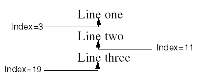

The IDLgrText:: GetIndexRelativeTo function method returns the index of the character in the string closest to a given coordinate. See Character Indices in Text Strings for more information.
Result = Obj ->[ IDLgrText ::]GetIndexRelativeTo( Window, Index , Direction )
An integer specifying the character index of the closest character above, below, or to either side of the index specified by Index .
An object reference to the IDLgrWindow object in which the text appears.
An integer specifying the character index of the character from which the search should begin.
An integer specifying the direction from Index . Possible values are:
None.

GetIndexRelativeTo Example
So the following call:
index=Obj->GetIndexRelativeTo(oWin, 11, 2)
returns 3, the closest insertion point above 11.
The following call:
index=Obj->GetIndexRelativeTo(oWin, 13, 3)
returns 19, the closest insertion point below 11.
|
7.0.6 |
Introduced |